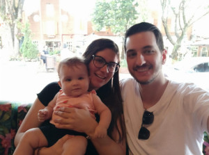

Fico muito feliz que tenha interesse em me conhecer mais. Então vamos lá!
Sou a Vanessa, casada com o Gustavo e mamãe da Sophia, uma princesa que veio em janeiro de 2023 para nos alegrar muito.
Me especializei na Unicamp onde realizei o meu mestrado e após finaliza-lo iniciei uma especialização em estética avançada.
Depois de concluir os cursos inicie os primeiros trabalhos, claro que minha cobaias foram minha mãe e minha sogra, hehehe
Continuei me especializando, fazendo cursos com o profissionais mais conceituado do mercado, para poder sempre trazer
inovação, novas técnicas e aperfeiçoar as minhas habilidades para sempre trazer a melhor experiencia aos meu clientes.
